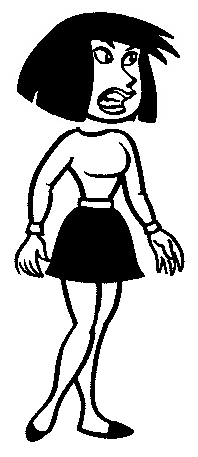

live preview — how followers'
strips will cast it:

THIS IS AMAZING, THE
EMOTION WHEEL IS BACK!!
lain
your self-view: Anna · shouting (intensity 80%)
emotion overrides the automatic text analysis
drag toward an emotion; farther = stronger.
center = let the text decide (today's regex analysis)
posting to lain.com as @lainvisibility → balloon type
mockup 4/4 — compose with the emotion wheel
(the original Comic Chat's defining widget). The chosen pose could ship as
a post metadata tag other fedichat users' strips would honor.